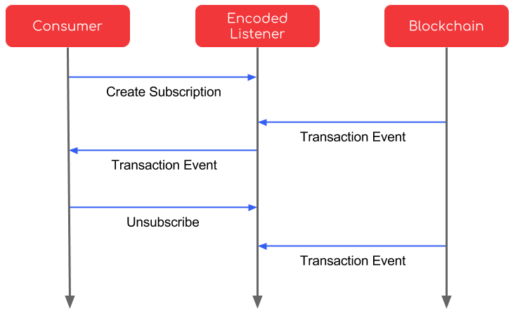

ACES Encoded Listener API Docs
The ACES Encoded Listener API Specification defines the API interface for blockchain listeners. SDKs are available in Java, Go, PHP, JavaScript, Python, and C#.
The Encoded Listener API provides a way for all the different blockchain transaction events to be easily consumed via a common REST-ful API. The API allows consumers to create subscriptions and receive blockchain events in real-time using Webhook callbacks.

Overview
curl 'http://bitcoin-encoded-listener.domain.com' \
-X POST \
-d '{
"callbackUrl": "http://consumer.domain.com/handler",
"minConfirmations": 5
}'
EncodedListenerClient client = new EncodedListenerClient(
"http://bitcoin-encoded-listener.domain.com"
);
SubscriptionRequest request = new SubscriptionRequest();
request.setCallbackUrl("http://consumer.domain.com/handler");
request.setMinConfirmations(5);
client.createSubscription(request);
After subscribing, the Encoded Listener will
POSTBitcoin transaction data to the tohttp://consumer.domain.com/handler:
{
"id": "93598235283502398502398",
"createdAt": "2017-11-01T00:00:00.000Z",
"status": "new",
"tries": 1,
"data": {
"hex": "01000000019a9aa57825106e72c92c0c771b88a9f7bbdd399d12e405e29757964f9a387ef0000000006b483045022100fdac2e51068717da7f564ae676d84f04aa6e5157b72c168301809518bc8e733902200b39ba9d0ee8cd0c5f0ed7a4d51ec2aaf5976252aeca6ffd5b9794076898c463012102892589b5b0e2751bd2500a71f06b2d851439678eb0e976be5b5a0cc8f3e49895ffffffff021caa3900000000001976a914ddaccd2403cfffad5936ca66c2c6a7c98146936888ac9b593001000000001976a91461752641b0bf1cecd08341224f83e690853abd0588ac00000000",
"txid": "fdcd3564c09ddd33dafd9d1bd2f5dc583f8c818fff631397c7f6d0d12ecf17b4",
"hash": "fdcd3564c09ddd33dafd9d1bd2f5dc583f8c818fff631397c7f6d0d12ecf17b4",
"size": 226,
"vsize": 226,
...
}
}
Consumers must subscribe to an Encoded Listener API instance to start receiving blockchain events from the Encoded Listener.
Once a consumer has been subscribed, the Encoded Listener will start
sending POST requests to the registered endpoint for every new blockchain transaction
event.
If the consumer fails to respond to the POST with a 200 response (for example if there is
an error processing the event or the server times out), the Encoded Listener will try to resend
the request as configured by the Encoded Listener.

If the Encoded Listener tries to post too many events to a consumer without success, the Encoded Listener can cancel the subscription and stop sending events to the consumer.
Consumers can also unsubscribe directly by sending a POST request to the Unsubscribe
endpoint.
Developers of Encoded Listener APIs can view our sample Ark Encoded Listener implementation.
Implementations
The ACES Encoded Listener API defines a standard protocol to facilitate the consumption of blockchain transaction events across numerous different blockchains. As such, it is a high level abstraction on top of the different transaction types across blockchains and needs to be implemented separately for each blockchain.
The Encoded Listener API specifies only the base necessary capabilities for consuming blockchain transaction events in a generic way that can be supported across many different blockchains. All implementations conforming to the ACES Encoded Listener API specification can be consumed using the common client libraries and processing logic, allowing different blockchains to be easily plugged into an application, including ACES Services.
In the future we may add API Capability Interfaces that can define more advanced implementations for subscribing to and consuming blockchain events such as searching or filtering on event streams.
Instances
Instances run on any web server and can be made private or public. Multiple instances may
also run on a single web server using different HTTP ports. Because instances require direct
access to the blockchain transaction data, they typically would need to be running as a
blockchain node or make calls to the target blockchain using an RPC client (for example geth).
We don't make any guarantees on how instances are managed, so consumers will need to host their own instances, subscribe to only trusted providers, or subscribe to multiple instances to ensure they receive up-to-date blockchain events in the case a provider goes down.
Authentication
The ACES Encoded Listener API does not define any authentication method at this time.
This allows any consumer to subscribe to and receive listener blockchain event data. If an
ACES Encoded Listener provider needs more security around subscriptions, they can host
their instance on private network or implement HTTP Basic Auth for their web server and
require consumers to send an Authorization header with valid credentials.
Pagination
url="http://localhost/subscriptions/3985723987423/events"
url="$url?pageSize=100"
url="$url&page=4"
url="$url&continuation=839729837520395702375023"
curl -X GET "$url"
EncodedListenerClient client = new EncodedListenerClient("http://localhost");
SubscriptionPageRequest request = new SubscriptionPageRequest();
request.setPageSize(100);
request.setPage(4);
request.setContinuation("933502938509238509283059");
Page<Subscription> subscriptionsPage = client.getSubscriptionsPage(request);
{
"pageSize": "100",
"page": "4",
"continuation": "933502938509238509283059",
"items": [
{
"id": "1",
"callbackUrl": "http://localhost/handler",
"minConfirmations": 5,
"createdAt": "2017-11-01T00:00:00.000Z"
}
]
}
A GET request that returns a list of unbound items will be paginated
in a way to return only a small number of items per page.
Clients can request additional pages by performing additional GET
requests to retrieve the next page.
Page number is zero-offset such that the first page has page = 0.
The page response contains a continuation property that can be added
to GET requests for the next page to stabilize pagination offsets.
Including the continuation parameter ensures that newly added items
will not shift down items in the next page. This allows pages to be
iterated over without encountering repeat elements as elements are
added.
Errors
ACES Encoded Listener API instances can return a set of standard HTTP errors classified by the response HTTP Status code.
An request body validation error returns a 400 HTTP Status Code and an error response body
with a detailed description of field validation errors. Consumers should correct the request
before resubmitting the request.
Any 5xx level errors can be retried without making changes to the request since they
are returned when there is something wrong with the server and not the consumer's request.
Status Codes
ACES Encoded Listener API instances return errors responses with the following HTTP Status codes:
| HTTP Code | Description |
|---|---|
| 400 | The request was invalid. The consumer should read error messages and correct the request body before resending request. |
| 404 | The requested resource was not found. |
| 405 | The URL in the request does not support the requested HTTP method. |
| 429 | Too many requests have been sent over a given time frame and the server has limited the consumer. |
| 500 | The server had an unexpected error. Consumers should try the request again later. |
| 503 | The server is running, but not currently accepting traffic. Consumers should try the request again later. |
General Errors
Example error response:
curl 'http://localhost/subscriptions/123456/unsubcriptions' \
-X POST
{
"code": "alreadyUnsubscribed",
"message": "The Subscription has already been unsubscribed."
}
Errors always return an error code and human readable error message.
Consumers should handle any expected errors for an API call using the error code value.
General Error Codes
| Code | Description |
|---|---|
| notFound | The requested resource was not found. |
| invalidRequest | The request body is invalid. See Validation Errors below. |
Validation Errors
Example error response:
curl 'http://localhost/subscriptions' \
-X POST \
-d '{
"callbackUrl": "not-a-url"
}'
{
"code": "invalidRequest",
"message": "Request is invalid.",
"fieldErrors": [
{
"field": "callbackUrl",
"code": "invalidUrl",
"message": "The url given is invalid."
},
{
"field": "minConfirmations",
"code": "required",
"message": "Min confirmations is required."
}
]
}
Validation errors have http status code = 400 and a response body error code = invalidRequest.
Any field validation errors are returned in the fieldErrors list and include the field name corresponding
to the request parameter, validation error code, and human-readable message for the field error.
Field Error Codes
| Code | Description |
|---|---|
| required | The field value is required. |
| invalidUrl | The given URL value is invalid. |
| tooShort | The field value given is too short. |
| tooLong | The field value given is too long. |
Versions
Encoded Listeners instances can upgrade to new backwards compatible versions without breaking client integrations. ACES defines backwards compatible changes as any of the following:
- Adding new API endpoints
- Adding new optional request parameters
- Adding new response properties
- Changing length or format of String properties
If breaking changes to the Encoded Listener must be made, the provider needs to launch a new version in parallel at a different URL and have clients re-subscribe to the new version URL.
API Reference
Subscriptions
The Subscribers endpoint allows subscriber to register their node to receive blockchain events from the Encoded Listener.
Create a Subscription
curl -X POST 'http://localhost:8080/subscriptions'
const request = require('request');
request(
'http://localhost:8080/subscriptions/',
{ json: true },
(err, res, body) => {
console.log(body.explanation);
}
);
The request to create a new Subscription.
Parameters
| Parameter | Type | Description |
|---|---|---|
| callbackUrl | string | Target target URL to POST Encoded Listener events to. |
| minConfirmations | integer | Confirmations required before event is sent to subscriber. |
HTTP Request
POST http://localhost:8080/subscriptions
Get a Subscription
curl -X GET 'http://localhost/subscriptions/{id}'
Get a Subscription by identifier.
Parameters
| Parameter | In | Type | Required | Description |
|---|---|---|---|---|
| name | path | string | True | Subscription identifier |
HTTP Request
GET http://localhost:8080/subscriptions/{id}
Event
List Subscription Events
curl -X GET 'http://localhost:8080/subscriptions/{id}/events'
const request = require('request');
request(
'http://localhost:8080/subscriptions/' + subscriptionId + '/events',
{ json: true },
(err, res, body) => {
console.log(body.explanation);
}
);
Gets a page of Subscription Events.
Parameters
| Parameter | In | Type | Required | Default | Description |
|---|---|---|---|---|---|
| name | path | string | True | Subscription identifier | |
| pageSize | query | integer | 100 | Number of items to return per page. | |
| page | query | integer | Zero-offset page number to return. | ||
| continuation | query | string | Continuation param for fetching next page. |
HTTP Request
GET http://localhost:8080/subscriptions/{id}/events
Unsubscribe
Create an Unsubscribe
curl -X POST 'http://localhost:8080/subscriptions/{id}/unsubscribes'
const request = require('request');
request(
'http://localhost:8080/subscriptions/' + subscriptionId + '/unsubscribes',
{ json: true },
(err, res, body) => {
console.log(body.explanation);
}
);
Unsubscribes an active Subscription.
Returned response:
{
"id": "329857298735983",
"created_at": "2017-11-08T05:34:54.267Z"
}
Parameters
| Parameter | In | Type | Required | Description |
|---|---|---|---|---|
| id | path | string | True | Subscription Identifier |
HTTP Request
POST http://localhost:8080/subscriptions/{id}/unsubscribes
Health
Get Health of node.
curl -X GET 'http://localhost:8080/status'
Get application health information.
HTTP Request
GET http://localhost:8080/status